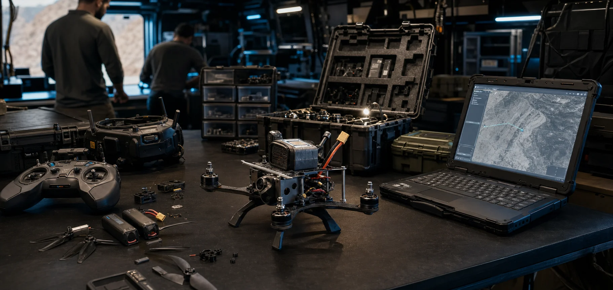
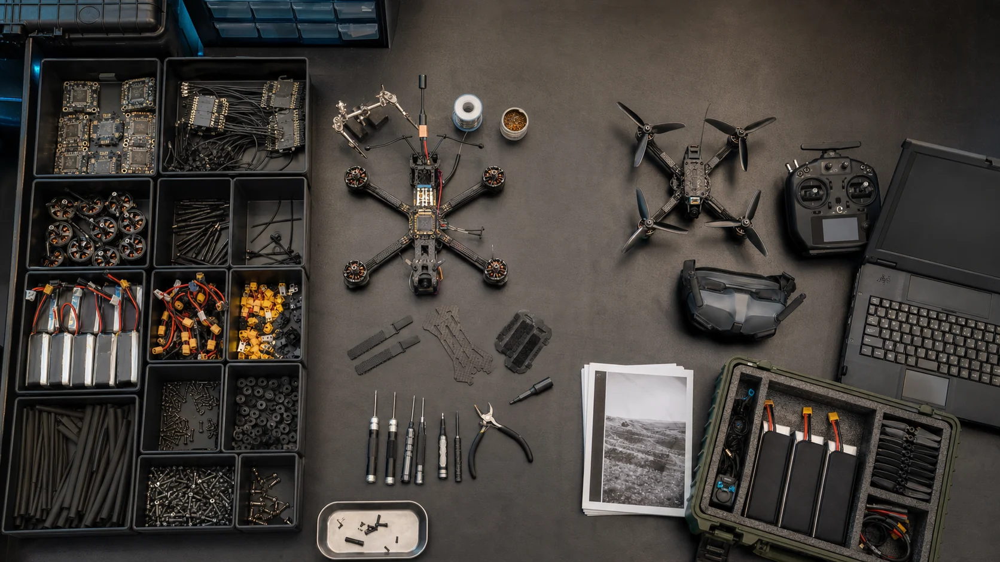

1 Inventory
Imports messy CSV and Excel lab inventories without dropping uncertain rows.
- Separate organization workspaces.
- Scored classification with review and reclassification.


COTS ARCHITECT sits between the lab spreadsheet and the ground-control station. It turns aggregate COTS inventory into validated builds, batteries and support, RF evidence, and a concise technical handoff.
The installed Windows application runs offline, keeps every organization in its own workspace, and never invents aircraft, radios, relays, or specifications.
Inventory → Build → Mission Support → RF Check → Handoff.
Built for UxS professionals who need to know what they can build, what support it needs, and which constraints must reach the planning team.
Five-stage workflow
Work left to right. Each stage carries the selected UxS forward without turning the tool into another command-planning burden.
Imports messy CSV and Excel lab inventories without dropping uncertain rows.
Assembles complete UxS and operator kits from parts actually in the lab.
Calculates what the selected builds need for the operating window.
Places saved UxS and operator assemblies in the AO.
Packages only the selected UxS and its support evidence.
Quantity-first by design
COTS ARCHITECT preserves aggregate inventory. Lot, condition, storage location, and individual identifiers remain optional for the items that benefit from them.
Loose components stay in Build. RF Check receives the complete saved UxS and operator assemblies, with every configured interface and fitted antenna.

Product behavior
The tool shows the operator what is incomplete and where to correct it instead of hiding the reason behind a single score.
RTIC, SORD, Mongolia, and future customer labs remain separate. Builds, mission support, RF analyses, and handoffs follow the active organization.
Import classification uses multiple signals and confidence. Operators can reclassify one part or a bulk selection at import or later.
A saved build carries its controller, goggles or receiver, control receiver, VTX, data radios, and fitted antennas into directional link checks.
The package contains the chosen UxS, support products, RF evidence, and technical checks. It does not disclose the organization’s entire lab.
The result is a concrete UxS configuration with known support demand and explicit limitations that can move to the rest of the planning team.
Status and deployment
The installer packages a local Electron application backed by explainable physics, support, and RF rules. Customer data remains on the operator’s computer.
Small technical teams responsible for rapid unmanned builds and sustainment in contested or air-gapped environments.
Planners who need repeatable answers without surrendering control to opaque scoring systems.
Build with what you have. Know what you need.
Install once, work offline, and move a defensible UxS support package to the rest of the team.
Download Latest Release